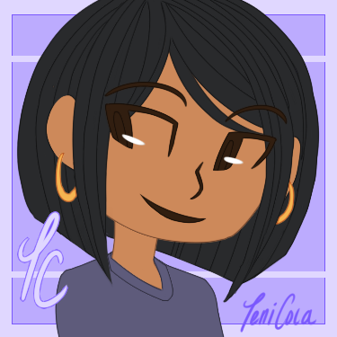

About The Artist
Hello, and thank you for visiting! I'm Teniola Coker -- also known by my online handle "TeniCola" -- and I'm an illustrator, designer, and visual storyteller. I enjoy creating artwork and designs that are inspired by my personal interests, favorite stories, and fellow creatives and clients.
I'm a largely self-taught artist who has previously worked as a design intern and as a print production artist. I've been a student in online courses at The Oatley Academy and Skillcrush, and I've been developing my personal project Deities of Duat / DEITIES Project.
I am currently exploring work opportunities in visual design, and will soon be available for commission and freelance work. My skills include digital and traditional illustration, print and layout design, wireframe drafts, web design comps, and HTML and CSS coding.
Contact
I may be reached by email at teni.coker[at]gmail.com for any business inquiries. Feel free to also visit my other media accounts located in the site footer to view more of my art, follow my progress, and consider supporting my work!